The steepest slope of descent is wrong!
John Armitage
Numerical resolution
When iteratively solving a PDE we need to pay attention to the temporal and spatial discretization.
For example when modelling plate flexure we need to have a sufficiently high-resolution to get an accurate solution.
Numerical resolution
When iteratively solving a PDE we need to pay attention to the temporal and spatial discretization.
What about for landscape evolution?
A transport limited model
$$ \partial_{t}\eta = U - E, $$ and the rate of change in sediment thickness is,
$$ \partial_{t}h = E - \partial_{x}q_{s}.$$ The rate of change in elevation is then,
$$ \partial_{t}z = \partial_{t}\eta + \partial_{t}h. $$
sediment:
$$ \partial_{t}z = \partial_{t}\eta + \partial_{t}h $$ Carry through the sum:
$$ \partial_{t}z = U - \partial_{x}q_{s} $$
Smith and Bretherton (1972) model
- In the absence of runoff $q_{s} = -\kappa\partial_{x}z$.
- In the presence of flowing water $q_{s} = -cq_{w}^{\delta}\left(\partial_{x}z\right)^{\gamma}$.
- $\delta > 1$ to concentrate flow (Smith and Bretherton, 1972).
- $\gamma \geq 1$ and is dependent the sediment transport (Paola et al., 1992).
$$ \partial_{t}z = U + \partial_{x}\left(\kappa\partial_{x}z + cq_{w}^{\delta}\left(\partial_{x}z\right)^{\gamma}\right) $$
A detachment limited model
$$ \partial_{t}\eta = U - E, $$ and the rate of change in sediment thickness is,
$$ \partial_{t}h = E - \partial_{x}q_{s}.$$ The rate of change in elevation is then,
$$ \partial_{t}z = \partial_{t}\eta + \partial_{t}h. $$
(there is no sediment!):
$$ \partial_{t}z = U - E $$
Howard and Kerby (1983) model
- Erosion is a function of the power of the flow to detach rock.
- $E = -k_{b}\rho_{w}gq_{w}^{m}\left(\partial_{x}z\right)^{n}$.
- $m \sim 0.5$ (Lacey, 1930; Leopold and Maddock, 1953).
- $n \geq 1$ (less than one is just silly)
$$ \partial_{t}z = U + kq_{w}^{m}\left(\partial_{x}z\right)^{n} $$
Routing water down the steepest slope: What does the steady state landscape look like?
Take the linear form of the two models: $\gamma = 1$ and $n = 1$
$$ \partial_{t}z = U + \partial_{x}\left(\kappa\partial_{x}z + cq_{w}^{\delta}\partial_{x}z\right) $$
$$ \partial_{t}z = U + kq_{w}^{m}\partial_{x}z $$
Smith and Bretherton (1972) model
Howard and Kerby (1984) model
$\chi$ analysis for slope area relationships
| Transport limited $$ \partial_{t}z = U + \partial_{x}\left(\kappa\partial_{x}z + cq_{w}^{\delta}\partial_{x}z\right) $$ | $k_{s}$ | $\Theta$ |
|---|---|---|
| $\delta = 1.3$ | 0.86 | -0.23 |
| $\delta = 1.5$ | 1.76 | -0.42 |
| Detachment limited $$ \partial_{t}z = U + kq_{w}^{m}\partial_{x}z $$ | $k_{s}$ | $\Theta$ |
|---|---|---|
| $m = 0.3$ | 0.95 | -0.29 |
| $m = 0.5$ | 6.52 | -0.46 |
| $m = 0.7$ | 71.42 | -0.68 |
Similar steady state landscapes
Model response to precipitation change
What is the response to a doubling of precipitation rates?
$$ \partial_{t} z = U - \partial_{x}\left(\kappa\partial_{x}z + cq_{w}^{\delta}\partial_{x}z\right) $$What about model resolution?
How wide are rivers?
 Median of 124 m, upper quartile 432 m
Median of 124 m, upper quartile 432 m Data from "Global extent of rivers and streams" by Allen & Pavelsky, Science, 2018
How wide are rivers?
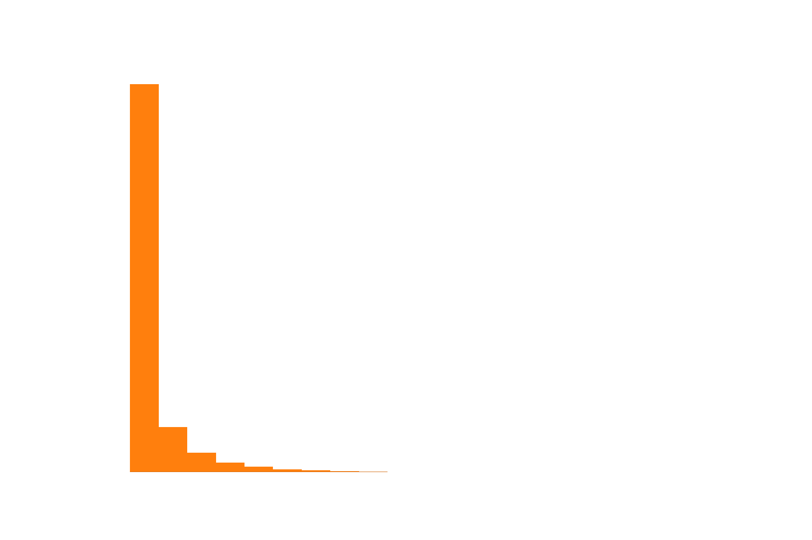 Median of 509 m, upper quartile 1755 mData from "Global extent of rivers and streams" by Allen & Pavelsky, Science, 2018
What is a typical grid resolution?

A transport-limited model of landscape evolution
Conservation of mass: $$ \partial_{t} z = U - \nabla q_{s} $$Sediment flux: $$ q_{s} = - \left( \kappa \nabla z + cq_{w}^{n}\nabla z \right) $$
How do we route water flux $q_{w}$?
Routing overland flow
Two of many options: steepest descent or distributed by gradient. Solve the equations using a FEM approach
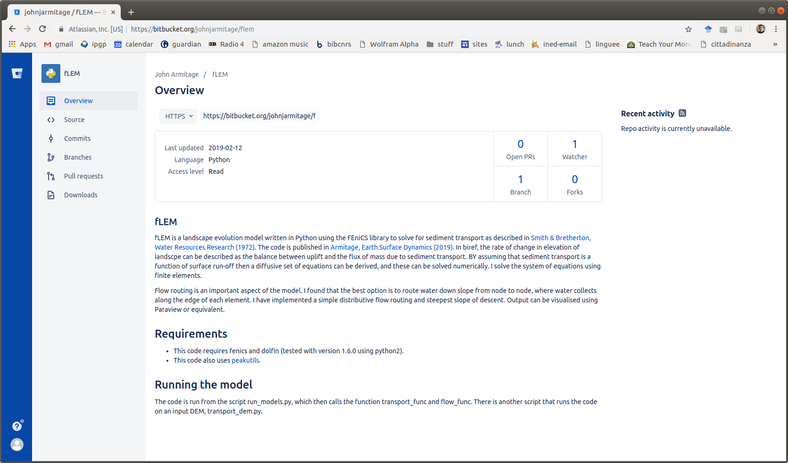Cell-to-cell
Cell-to-cell
Cell-to-cell
Cell-to-cell
Node-to-node

Node-to-node
Node-to-node
Node-to-node
Node-to-node distributed is best
This is because it allows for the greatest range of flow paths
Is it because it approximates for sub-grid processes?
Are landscapes steady?
Hasbargen and Paola, Geology, 2000:
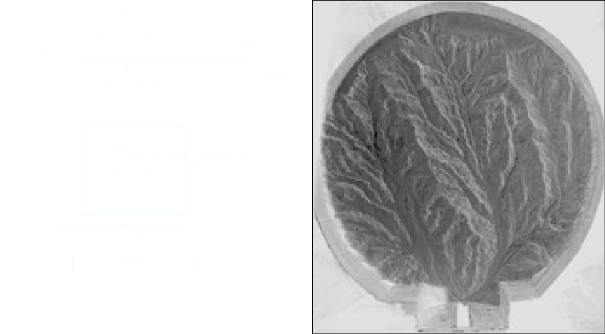Hasbargen and Paola, Geology, 2000:
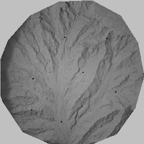Hwang and Parker, Geophysical Research Letters, in review:
Pelletier, Geophysical Research Letters, 2004:
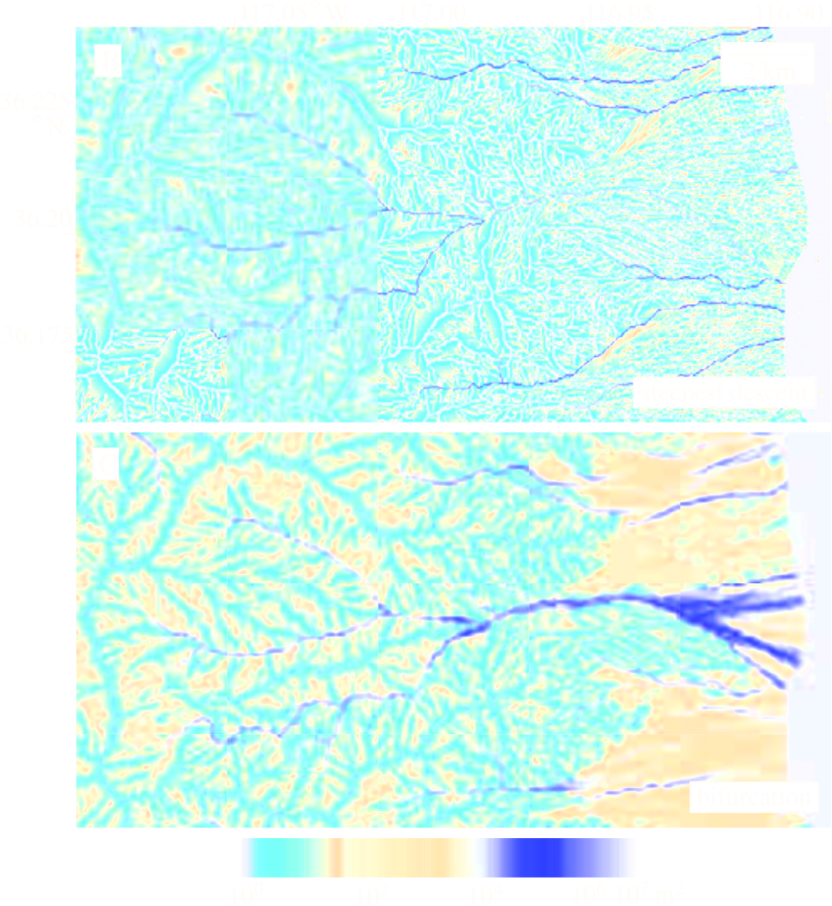Pelletier, Geophysical Research Letters, 2004:
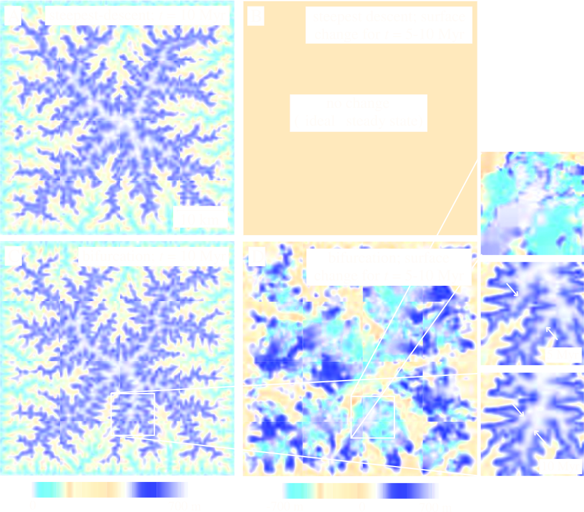Perron et al., Journal of Geophysical Research, 2008:
"Pelletier [2004] has proposed that ‘‘static’’ equilibrium solutions to drainage area-dependent landscape evolution models, in which $\nabla z/\nabla t = 0$ for all $(x, y)$, are an artifact of steepest descent flow routing, whereas numerical methods based on multiple flow directions produce persistently migrating drainage networks like those observed in some physical experiments [Hasbargen and Paola, 2000]. In contrast, we find that a flow routing method in which flow directions are not restricted to discrete increments can generate deterministic numerical solutions with stable drainage divides (see section 5.1), a result also obtained by Moglen and Bras [1995]."Node-to-node
Node-to-node
Unsteady steady-state
Riu Bergantes
Whitfield et al., Geomorphology, 2013:
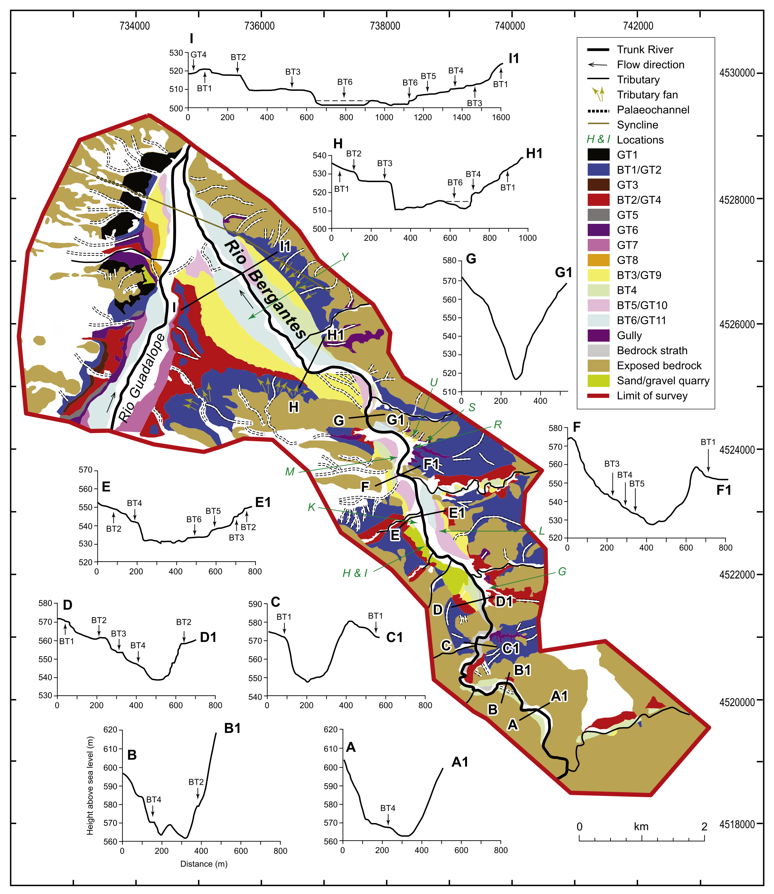